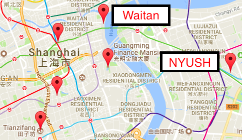

It is a period of study abroad. Luke Skywalker, escaping from Saadiyat Island, has won his NYUSH study away.
During the escape, Obi Wan Kenobi instructs Luke to train under the retired Jedi master, Yoda, who possesses the memory skills necessary to remember important location names in Shanghai.
Pursued by the boredom of packing, Luke races to Huangpu aboard his X-Wing, the central district in Shanghai where Yoda resides in.
You: My X-wing landed on Huangpu river, which is in the Huangpu district of Shanghai. Wow! The skyscrapers on the eastern side looks amazing! Now all I have to do is find this Yoda... if he even exists. Still... there's something familiar about this place. I feel like... like I'm being watched!
Yoda: Away with your weapon! I mean you no harm. What makes a young warrior come here?
You: I'm looking for a Jedi Master.
Yoda: Ooooh. Jedi Master. Yoda. You seek Yoda. Take you to him, I will. But now, we must have a cup of tea. Come. Good tea. Come. I am wondering, does your X-wing weigh ton?
You: Yeah I guess.
Yoda: Then you are in the right place.
You: I don't get it. What does X-wing has to do with this place?
Yoda: Don't you see? Weigh, ton... Waitan! We are in Waitan right now. mhmmmmm.
You: (...what am I even doing here... )

You: Look, I'm sure this tea is delicious, and this "The Go Bar" (planet Dagobah pun?) is a nice international cafe for you. I just don't understand why we can't see Yoda now.
Yoda: Do not be so Antsy! For the Jedi it is time to drink tea as well. Drink, drink. Hot. Good tea, hm? Good, hmm?
You: Oh, I don't know what I'm doing here. We're wasting our time.
Yoda: ...I cannot teach him. The boy has no patience. Hmmm. Much anger in him, like his father.
Ben (just his voice due to his spirit form. You slowly realize this): Was I any different when you taught me?
Yoda: Hah. He is not ready.
You: Yoda! I am ready. I... Ben! I can be a global leader. Ben, tell him I'm ready. I won't fail you - I can put myself outside of the comfort zone... and play the new octave!.
Yoda: ...Oh, you will be. You will be..
Ben: Luke, I forgot to say one thing to you. Master Yoda also happens to be a great pun master.
You: Jesus Ben this I'm not here to have fun.
Yoda: Oh no young Skywalker. This is exactly why you are here. Puns, especially bizarre ones, serve as great memorization tools. In fact, this completes the second pun of the day.
You: Oh god... Tea, Antsy, Fun... Tianzifang.
Yoda: You will be afraid partially because of this too.
You: (...Some lousy puns won't stop me. Now... I will just:)
You: Master Yoda, why did your have me buy some naan and drink from Nanjing Lu?
Yoda: You will see soon. Now, glue them.
You: (... naan, gin, glue... nanjing lu... I'm starting to get a hang of his pun... although not fun...)
Yoda: Yes. A global leaders's strength flows from the Force. But beware of the dark side. Anger... fear... aggression. Quicker, easier, more seductive. Easily they flow, quick to join you in procrastination. A true Jedi uses the Force for community serving and self empowerment. Now, a challenge for you ... lift the X-ring using your force and bring it here.
You: Master, glueing naan and gin together is one thing. This is totally different.
Yoda: No! No different! Only different in your mind. You must unlearn what you have learned.
You: All right, I'll give it a try... just like trying any of the food here I don't know.
Yoda: No! Try not. Do. Or do not. There is no try.
You: (The X-wing won't budge... it's too big (hm... study-away essays)... I should:)
You: ...I can't believe.
Yoda: That is why you procrastinate. Take rest, we shall. Fly us to Yuyuan. Train your logic skills, you need to. A nice garden meansr a nice game of Chinese chess. Let's play young Skywalker.
You: Ok!
Yoda: Mhmmm, I must warn you. Yoda not only a Jedi master. Yoda also a Chinese chess master. Harder than being a Jedi.
You: (I don't buy what he is saying, because I'm beating the crap out of him.)
Yoda: ...Unbelievable... You, you won!
You: (Yuyuan, he never stops punning does he...You, you, won... Yuyuan)
Yoda: Old and weak have I become... when nine hundred years old you reach, play as smart you will not. Hmm?...Rematch younh Skywalker!
You: (I should probably:)
Yoda: Concentrate... feel the Force flow. Yes. Good. Calm, yes. Through the Force, things you will see. Other places. The future... the past. Classmates long gone...
You: Han! Leia!
Yoda: Hmm. Control, control. You must learn control.
You: I saw ... I saw sleepless nights...
Yoda: Mmm. Friends you have there.
You: FoS... Data Structures...They were in pain.
Yoda: is the future you see.
You: ...I've got to go to them.
Yoda: Decide you must how to serve them best. If you leave now, help them you could. But you would spoil them, destroying all for which they have fought and suffered...OW!
You: Are you ok master!?
Yoda: Yes yes fine, I am. On that chair, I hit my shin... I want more tea. Handy, it will be.
You: (God damm it why is he obsessed with puns) Shin, tea, handy. I get it master.
Yoda: Anyways...You must not go!
You: But Han and Leia's health and well-being will be in danger if I don't.
Ben: You don't know that. Even Yoda cannot see their fate. If you choose to befriend them, you will have to hear them boasting about their workload. It will happn countless times. I cannot interfere.
You: ... I understand. I will go now (I should:)
You: Master, I have come back to complete the training.
Yoda: No more training, do you require. Already know you that which you need.
You: Then I am a global leader .
Yoda: Not yet. First be a Shanghai master, you must. Learning Chinese. Their culture. Their history. Their economy. Their politics. You must confront these. Then, only then, a Shanghai master, and then a Jedi will you be. And confront them, you will.
Yoda: Imaginative and strategic thinker, you are, with a plan for everything. Take care, you must still. It is often a challenge for you to find like-minded individuals given your relentless intellectual approach to global learning. To sustain the intensity of your learning, I encourage you to have good friends who can support you.
Yoda: Innovative inventor, you are, with an unquenchable thirtst for knowledge. Take care, you must still. You have a tendency to share your thoughts to others before thinking it through.
Yoda: Bold, imaginative, and strong-willed, you are, always finding or making a way to learn things efficiently. Take care, you must still. You can be at times insensitively call out others' failures, bringing yourself into trouble.
Yoda: Smart and curious thinker, you are. Always ready for an intellectual challenge. Take care, you must still. You tend to focus on comping up with ideas rather than implementing them on a daily basis. When in doubt, ust go out in the city and immerse yourself with the language in cultural learning.
Yoda: QUiet and mystical, you are, yet very inspiring and tireless idealist. Take care, you must still. Your passion is perfectly capable of carrying you past your breaking point and if your zeal gets out of hand, you can find yourself exhausted, unhealthy and stressed. It will help to have a good friend who can keep in touch with you.
Yoda: Poetic, kind and altruistic, you are, always eager to help a good cause. Take care, you must still. You carry a high risk of feeling misunderstood. When in doubt, trust yourself and keep moving forward.
Yoda: Charismatic and inspiring, you are, able to mesmerize your listeners. Take care, you must still. Altough you have a tremendous capacity for reflecting on and analyzing your own feelings, if you get too caught up in another person’s plight, you can become very anxious, seeing other people’s problems in yourself, trying to fix something in yourself that is not wrong.
Yoda: Enthusiastic, creative and sociable free spirit, you are, who can always find a reason to smile. Take care, you must still. If you rely too much on your intuition, assume or anticipate too much about a friend’s motivations, you can misread the signals and frustrate study plans that a more straightforward approach would have made simple.
Yoda: Practical and fact-minded, you are, with undeniable reliability. Take care, you must still. You have little tolerance for indecisiveness, and lose patience even more quickly if your chosen course is challenged with impractical theories, especially if they ignore key details – if challenges becomes time-consuming debates, you can become noticeably angry as deadlines tick nearer.
Yoda: Very dedicated and warm, you are, always ready to defend your loved ones. Take care, you must still. You need to know when to say no and stand up for yourself if you are to maintain your confidence and enthusiasm.
Yoda: Extraordinarily caring, social and popular, you are, always eager to help. However, do be careful. You need to recognize that not everyone follows the same path or contributes in the same way.
Yoda: Excellent at administrative tasks, you are, unsurpassed at managing things – or people. Take care, you must still. You should keep in mind that people come from many backgrounds and perspectives, and what may seem right to them is not always an absolute truth.
Yoda: Bold and practical, you are, showing mastery with many kinds of tools. Take care, you must still. You often act too soon, taking for granted your permissive nature and assuming that others are the same. Take a breath from time to time to reflect on your global experience
Yoda: Flexible and charming, you are, always ready to explore and experience something new. Take care, you must still. You find planning for the future to be quite challenging, as you plan actions and behaviors as contributions to a sense of identity, building a portfolio of experiences, not stocks.
Yoda: Smart, energetic and very perceptive, you are. Living on the edge is a great enjoyment for you. Take care, you must still. You may get too caught in the moment, take things too far, and run roughshod over more sensitive people, or forget to take care of your own health and safety.
Yoda: Spontaneous, energetic and enthusiastic entertainer, you are. Life is always exciting around you. Take care, you must still. You are often so focused on immediate pleasures that you neglect the learning and deadlines that make those luxuries possible.
You: Ok, I will work on it.
Yoda: Pass on what you have learned. You, you behind the screen. Visit the places, you must. Become more united with the force of Huangpu! Even if you do not manage to, fine it will be. Conversant about recommending your friends where to visit in Shanghai, you will be. Sharing to your NYUAD friends, destiny, it will be...
About
The goal of this project is to teach a busy NYUAD students the names of major locations in the Huangpu district of Shanghai in just 5 minutes to aid their experience at the city for J-term or a semester abroad, as well as advising what learning approach best fits their personality. For Star Wars novices, this project will hopefully stir interest in the series and for Star Wars fans, the story will serve as another way to enjoy the saga. The user will have the option to go through five locations as Luke Skywalker, accompanied by the Jedi master Yoda and occasionally Master Obi Wan Kenobi. Yoda, depending on how the user respond to each of the location, will give you a customized advice on your cultural learning strategies at NYUSH.
The project is around 800 lines long in HTML, CSS, and JavaScript codes. Please feel free to reuse the code! The story dialogues were based on scenes from Star Wars: The Empire Strikes Back and the Return of Jedi. The Star Wars theme was adopted for this project as using well-known characters were necessary for a story so short. The main dialogues and the ending font was in Franklin Gothic Medium Cond font, while the opening font was in Pathway Gothic One. The decision buttons control logic variables which allows 16 different user-customized ending to be shown in the end. The fonts used in the project was also based on the actual star wars movies. The most challenging part of this project was not the technical issues behind programming, but was actually the process of crafting a dynamic story that ended with a meaningful point of reflection, as well as formulating effective puns. For future improvement, each scene will have better visuals including videos and sound effects. More importantly, the interactivity of the story will be enhanced by actually having the decision buttons influence the development of the story. In the name of gender equality, I probably should have made an option for female users to be able to play as a female character. This will involve creating a whole new plot, perhaps modeled after story lines of Leia Organa or Rey from the newest trilogy.
Created by Ken Iiyoshi January 2018. Special thanks to Professor Craig Protzel and my classmates from the Explorable Stories Class.
Credits
16Personalities: https://www.16personalities.com
Font used from Star Wars End Credi: http://thebrbforums.com/index.php?topic=464.0;wap2